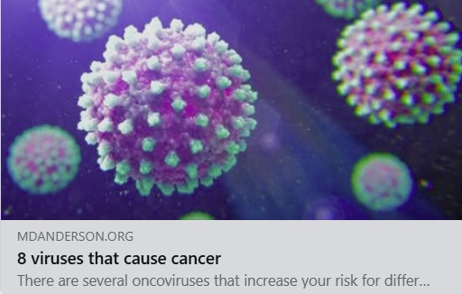

Most people catch many viruses in their lives– for example, over 90% of adults have Epstein-Barr virus, and adults catch the flu about once every 5 years. For a long time, catching frequent viruses was considered both inevitable and harmless. But it turns out that common, seemingly-mild viruses have disturbing long-term health impacts.
Common respiratory viruses increase the risk of heart attacks and strokes. Viruses are linked to dementia and Alzheimer’s Disease. They can re-awaken cancer cells in patients whose cancer was previously in remission. Persistent infections accelerate aging and undermine longevity. Viruses can be the trigger that kicks off life-long autoimmune diseases. New studies come out each week confirming that viruses can harm the health of your heart, blood vessels, brain, nervous system, and gut.
Please pause and let this sink in. If we were to truly internalize this information, there would be massive shifts in the practice of medicine, scientific research, and public policy.
What you can avoid (infections) may be just as important as what you seek out (exercise, healthy foods). This news seems depressing. It’s too late, viruses are everywhere, everyone has already caught them– what can be done?
There actually is a lot we can do. First of all, developing new anti-viral therapies and treatments should be a top priority. Second, regardless of what infections you’ve already had, preventing or reducing future infections will have a positive impact. There is exciting work happening towards both of these goals, including AI-assisted drug design, patient-led biomedical research, initiatives to improve indoor air quality and new technologies for cleaning the air.
How can viruses cause all these bad outcomes when some people who catch them are fine? Human health is complicated. Disease development involves a complex interplay of factors: infections, underlying genetics, environment, the microbiome, and more. Let’s return to the example of Epstein-Barr Virus (EBV). EBV has been strongly linked to Multiple Sclerosis, prolonged fatigue, and 6 different types of cancer. Given that almost everyone has had EBV, even though “only” a percentage of people develop these lasting impacts, this is a major cause of suffering.
A new world and a powerful idea
You may wonder why so many of these health issues are on the rise, when viruses are nothing new. Our world has changed drastically in recent decades compared to most of human evolution. We live in a hyperconnected age of global mega-cities and record numbers of large international flights now. We spend our time indoors in crowded, poorly ventilated buildings. These factors have allowed viruses to travel faster and farther than ever before.
The misleadingly named “Hygiene Hypothesis” is often used to justify the misconception that all microbes are good for us. However, this theory is more accurately reframed as the “Old friends hypothesis”: humans co-evolved with friendly bacteria and some parasites. Viruses are not our friends, but rather enemies. We did not co-evolve with these crowd infections of mass travel, mega-cities, and indoor confines.

The idea that viruses are contributing so much to human suffering and long-term disease is powerful. It will transform how we approach medicine, health, and aging, if we let it. This revelation is one of the key reasons that I decided to make a mid-life career pivot, stepping back from fulfiling work in AI to return to graduate school in Microbiology-Immunology, a journey I have been chronicling here on my blog.
I hope to spend the next few decades applying my machine learning skills to problems at the intersection of infections, multi-omic data sets, the microbiome, and chronic disease. Below, I will share some of what has captured my attention and upended my old views on disease and medicine.
Viruses have many ways to wreak havoc
Viruses have evolved to evade, outmatch, commandeer, and otherwise hurt our immune systems. Here is an incomplete and overlapping list of ways that viruses can harm us:
1. Persistence
Some viruses quietly stick around for years or decades after our initial illness. They may re-awaken later to cause more problems, or they may spawn surprising issues that we don’t recognize as part of our initial infection.
When they persist in our cells, viruses can impact gene expression, hijacking processes our cells need to gain nutrition and energy. Dr. Amy Proal, a researcher in this area, says that treating persistent infections will be necessary to combat aging and extend healthspan.
2. Autoimmunity
During an infection, sometimes our immune cells get confused into attacking our own tissue that may “look” similar to the virus (this process is known as molecular mimicry). Once it has mistakenly learned to attack self-tissue, the immune system may continue to do so, even after the virus has been defeated. This is just one of several ways by which viruses can trigger autoimmune diseases such as Lupus, Multiple Sclerosis, Rheumatoid Arthritis, or Type 1 Diabetes.
3. Microbiome changes
You might expect a stomach bug like norovirus to change the gut microbiome for the worse. Surprisingly, respiratory viruses such as Influenza, RSV, and Covid all harm the gut microbiome too. This is bad news, since the gut microbiome helps to regulate the immune system and produces neurotransmitters for our brain.
4. Immune Dysregulation
There are a bunch of ways that the immune system can malfunction (including the ones listed above). Measles can cause immune amnesia, where the immune system forgets previous infections it had learned to fight, leading people to catch the exact same diseases again. There is growing evidence that covid has a negative impact on the immune system as well.
5. Reactivation of other pathogens
Infection with a new virus can wake up old infections that were sleeping quietly in your cells. It is unfair, but sometimes viruses will gang up on you, re-activating other viruses (or bacteria) that weren’t bothering you before.
6. Cardiac damage
Chickenpox/Shingles, Influenza, and Covid all raise the risk of heart attacks and strokes. Viruses have many ways of harming our cardiac systems: inflammation, damage to the blood vessles, increased blood clots, and damage to the heart.
7. Cancer
Cancer involves a failure of the immune system to kill cells that have gone rogue and turned over to the dark side. In 2008, it was estimated that viral infections contribute to 15-20% of human cancer cases. Additional research further linking viruses and cancer has come out since then, so the percentage may be higher now. Both flu and covid infections can reawaken “sleeping” cancer cells that had previously been in remission or cause cancer to spread.

8. Cumulative impacts
You might hope that you could catch a virus, get it over, and be done with it. Unfortunately, that is often not the case. A young college student was fine after having covid twice, but then struggled to walk short distances after her 3rd infection. A Colorado newspaper columnist was skiing, biking, mountain climbing, and running half-marathons up until his 5th covid infection. At this point, he developed pain, fatigue, and migraines that prevent him from doing the activities he loves most. These are not just isolated anecdotes, research confirms the cumulative dangers of repeat infections. In children, a second covid infection is more likely to cause Long Covid than the first infection. Whatever your previous history, reducing risk of future infections is a worthwhile goal.
The above mechanisms are not exclusive. For example, some microbiome changes can make it easier for pathogens to pass from the gut into the bloodstream and provoke an autoimmune reaction (a process I talked about in this 5-minute video)
The Paradigm Shift
For most viruses, people focus on just a few weeks of initial symptoms. This is the wrong way to think about infections. Viral meningitis or EBV increases your risk of Alzheimer’s or dementia, 5-15 years later. Chicken pox (varicella zoster virus) can reactivate decades afterwards as shingles, which itself then leads to increased risk of stroke for at least the following year. We need to radically change how we think about viruses.
There is much we still don’t know about the immune system. Early during the covid pandemic, many experts made definitive statements about the risks of covid, assuming that those who didn’t die in the first few weeks must be completely fine. However, perturbations from infections that initially seem minor can have far-reaching, long-lasting, and time-delayed impacts. There is a ton that is still unknown.
Trying to figure out how viruses hijack cell processes, alter microbiomes, and dysregulate the immune system are complex questions. Researching these areas with curiosity, determination, and an open mind will reveal a lot.
Reasons for Hope
It can be gloomy to think about all the damage viruses can cause. The good news is that we don’t have to resign ourselves to these outcomes. Facing the disturbing reality that many viruses are worse than we thought is just the first step towards coming up with creative new solutions. There are some bright, curious, and determined people focused on these problems, although we need even more hands and brains to get involved.
The breadth and depth of the harms caused by viruses can focus biomedical research in new directions. Most viruses do not have effective anti-viral treatments. This creates a huge need. Scientific inquiry can fail catastrophically when those closest to the problem are not included. Patient-led research gives me hope, because it is centered on the expertise of those closest to the problem. I am also optimistic about the use of AI for discovering new drugs and designing immune therapies.
On the prevention side, reducing how frequently people get sick will have a big impact. Different viruses spread in different ways. In recent years, we have learned that many infections are airborne. Healthy indoor air is a human right, like access to clean drinking water. The UN recently held a high-level event focused on the right to clean air. There are many measures we can take to reduce transmission of airborne diseases, such as improved ventilation, air purification, and far-UVC technologies. Parliament houses, venues for elites, and barns for pigs have already received these air quality upgrades. We need children in schools, employees in workplaces, and patients in hospitals to get the same protections. Hopefully, we are on the cusp of a clean air revolution, with more people and organizations recognizing that healthy indoor air is essential.
N95 masks offer an immediate way to significantly reduce how often you get sick. Thankfully, the N95s available currently are more comfortable and more effective than the surgical or cloth masks that many of us wore back in 2020.
Conclusion
Viruses can harm our cardiac health and cognition, and increase our chances of cancer. If this revelation is fully realized, it will change how the field of medicine operates, priorities in research funding, and public policy on everything from indoor air quality standards to paid sick leave and school attendance. I believe we are on the threshold of what could be a drastic shift in better understanding, preventing, and treating viruses, thus unlocking longer and healthier lives.
Related posts you may also be interested in:
- 5 Devious Tricks Pathogens Use Against Us
- Viruses are weirder, worse, & more preventable than you realise
- Viruses: The Silent Triggers of Autoimmune and Neurodegenerative Diseases
- Your Immune System is Not a Muscle
If you enjoy my posts, please subscribe to be notified of new posts via email:
I look forward to reading your responses. Create a free GitHub account to comment below.